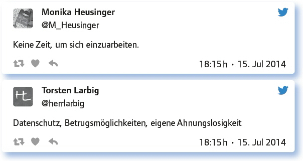

von Peter Jochum
Der MIT-Vordenker C. Otto Scharmer behauptet: „Five committed guys can change the world“1. Nicht ganz so ambitioniert, aber ähnlich geht es zu bei der Digitalisierung des Lehrens und Lernens und der Kollegien. Bei diesem Thema geht es um Schulentwicklung und das Change Management in der Schule. Unsicheres, unkalkulierbares Neuland ist zu beschreiten. Solisten, Helden oder eine starke Schulleitung alleine reichen nicht aus, um gewachsene Schulkulturen zu bewegen. Die Pioniere der Veränderung müssen sich verbünden. Es braucht ambitionierte Changeteams, die sich der digitalen Idee verschreiben, gemeinsam etwas bewegen wollen und nicht beim ersten Widerstand aufgeben. Und es braucht Verbündete an vielen Stellen im Kollegium. Wie kann man Kollegen davon überzeugen, digitale Medien im Unterricht einzusetzen, um digitale Kompetenzen zu fördern sowie digitale Medien für den eigenen Workflow zu nutzen?
Nenne 3 Impulse, Vorteile, die dich veranlasst haben, digitale Werkzeuge zu benutzen!
Alle Quellen, Materialien etc. sind immer sofort digital verfügbar.
a. Individuell auf SuS eingehen, b. Aufgaben variabler gestalten zu Fähigkeiten, c. flexiblere Gestaltung des Unterrichts.
Zeitersparnis, Effizienzsteigerung, Mobilität (Arbeiten am Mainufer und so).
1. Zeitersparnis, 2. Kooperationsmöglichkeiten, 3. Motivationale Impulse.
Arbeitserleichterung, vielfältigere Methoden, mehr Spaß.
Neugierde, Hoffnung auf Effizienz, bessere Dokumentation.
Anschaulichkeit, Motivation, Kreativität.
Persönliche Faszination, die Möglichkeit, die Schüler abzuholen und die Notwendigkeit für die Zukunft.
Mir von den Schülern nichts vormachen lassen (mich auskennen), Medienpädagogik unterrichten zu können, VERNETZUNG.
Vereinfacht: Archivierung, erleichtert Austausch, ermöglicht Veränderungen.
Nenne Werkzeuge, mit denen du gute Erfahrungen gemacht hast – möglichst mit konkretem Beispiel ev. Link!
Mit Kollegin aus Grundschule für einen Wettbewerb getwittert. SuS haben @Lea_ Weltretter erfunden, Tweets geschrieben.
Erst mal: Für mich #facebook-Gruppe; bessere Erreichbarkeit der Studierenden.
Goodreader: Mein Dokumentenarchiv; Notes Plus: Meine digitale Tafel; Teacher Tool: Mein digitaler Lehrerkalender.
Webquests im Geschichts- und Englischunterricht: cf. http://t.co/gjsj4YNryw
Prezi: http://t.co/zoJO0u2L5f, Example: http://t.co/qaIRU6rOpf Google Drive zur Archivierung und zum Austausch.
Polleverywhere für schnelle Meinungsbilder/Umfragen: http://t.co/riP4KVdWs6
OneNote für Materialsammlung, Unterrichtsplanung etc.: http://t.co/X3ggkixgI3
Einfache, wirkungsvolle Tools wie Answergarden, Wordle, Doodle, Quizlet. Und natürlich die Google Tools. Decken fast alles ab.
Etherpad wie das Zumpad zum kollaborativen Schreiben: http://t.co/UeV0ewkizS
Ich unterrichte mit Evernote und verwende es nicht nur zum Organisieren, sondern auch beim Visualisieren: http://t.co/rE6xnx0TAC
Welche Gründe geben Kollegen an, die GEGEN den Einsatz digitaler Werkzeuge sprechen?

Überlege dir, wie du Kollegen motivieren kannst, in den kommenden Wochen/ im kommenden Schuljahr digitale Werkzeuge einzusetzen.
Neben dem Angebot, interne Fortbildungen durchzuführen, Tools weiterzureichen, kamen die Teilgeber auf viele weitere gute Ideen.
Ich würde Zusammenarbeit bei einem Projekt anbieten, Anleitung erstellen, wie man kollaborativ schreiben kann bei Gruppenarbeit – Google-Doc.
Plan: Austausch-Runde zur Nutzung digitaler Medien im Unterricht (ca. 1 h), so ähnlich wie Webmontag.
Newsletter mit Erklärungen zum Tool erstellen.
Interne Fortbildungen anbieten. Das Interesse ist erfahrungsgemäß erstaunlich groß …
Verbündete an der Schule suchen und eine unauffällige kleine Kampagne starten.
Tools weiterreichen, die helfen, z. B. Excel-Tabelle zur Ermittlung der Noten entsprechend Punktzahl Kollegen geben/mailen.
Zuschauen lassen, die Angst vor der Technik nehmen – ggf. Dinge erklären, bei Fragen Hilfe anbieten.
Ab und zu von guten, gelungenen Projekten erzählen und neugierig machen!
Ich helfe weiterhin beim Einrichten neuer Laptops, Tablets und PCs der Kollegen. (Kostet zwar Nerven, macht aber Spaß!)
Barcamp statt pädagogischem Tag unter den Kollegen anregen und Fortbildungen geben bzw. Vorträge halten. UND: zum #EDchatDE einladen.
Interne FoBIs sind bequem, da ortsnah, man kennt sich, daher geringe Hemmschwelle, anwendbar, da angepasst an Ausstattung.
Lehrern, die in den gleichen Klassen unterrichten, Tools zeigen, die bereits eingeführt sind. So kann man locker aufspringen.
1. Medienberater-Newsletter für Kollegen, 2. Best-Practice-Artikel auf der Schulhome- page, 3. Für Fortbildungen bereitstehen.
Ein #Lernlab im Kollegium veranstalten; so wie das #LernLabKAS14 https://t.co/aD96z8R1Al
Welche Anregungen, Fragen, Links hast du sonst noch zum Thema „Kollegen für den Einsatz digitaler Werkzeuge gewinnen“?
Fange erst mal mit einem Tool an. Nichts überstürzen. Suche dir das heraus, was dir gut liegt.
„Moodle and Web2.0“, curated by @wagjuer: http://t.co/u52KiY9yNC
„Newsletter Fremdsprachen des LPM Saarbrücken“ by @wagjuer: http://t.co/KW8dXJ9crA
Kollegen klar machen, dass es ja wohl nicht der Plan sein kann, für immer bei ‚Stift und Block’ zu bleiben.
Für die Kollegen in Bayern: Ich führe gerne Fortbildungen durch zu mebis und flipped classroom. Gerne weiterleiten: http://t.co/gp8QPqPhlg
Graswurzelphänomen: Wenn kompetente SuS lieber Podcasten, statt ein Plakat zu erstellen, sagt kaum ein Kollege nein …
In der Lehrerausbildung damit beginnen. Nutzung digitaler Tools in Aktivitäten und zum Austausch vorstellen und einsetzen.
Will Richardson: Wikis, Blogs + Podcasts. Neue und nützliche Werkzeuge für den Unterricht (TibiaPress 2011)
Philippe Wampfler: Facebook, Blogs + Wikis in der Schule. Social-Media-Leitfaden (V+R, Göttingen 2013)
Das ELSA Netzwerk zeigt, wie es funktioniert, landesweit! Österreich scheint vieles richtig zu machen! http://t.co/IuJAgFcy9g
Weitere Informationen zum Thema:
Hermes, André, Medienberater bloggt: http://medienberaterbloggt.de/
Linktipps von #EDchatDE-Teilnehmern:
Resümee von Peter Ringeisen in seinem Blog (via @vilsrip): http://www.asamnet.de/~ringeisp/wordpress/?p=538
Etherpad zur Session Digitales Curriculum für Lehrende von André Hermes beim #DED15 (via @m4sp0): https://etherpad.wikimedia.org/p/DED15_Session23
Tweetprotokoll zum #EDchatDE-Summer-Special Wie durchbreche ich das Einzelkämpfertum an meiner Schule? (via @herr_hundt): https://docs.google.com/spreadsheets/d/1xZQfArAfABKwJHIcyr-6eUnl5WRFGXwpn3G4l00EbqM/pubhtml
Link zum vollständigen Protokoll: